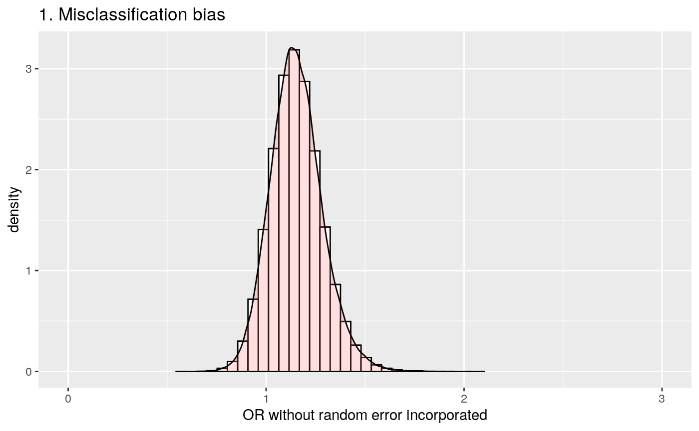
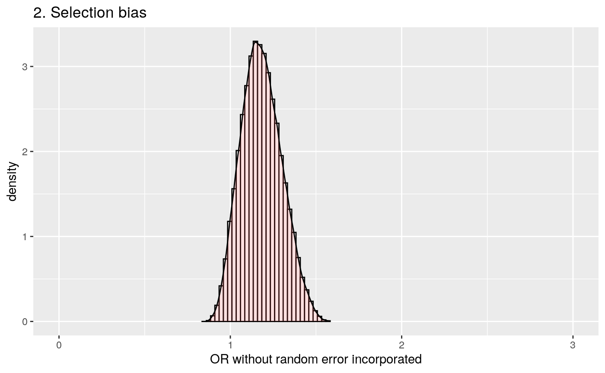
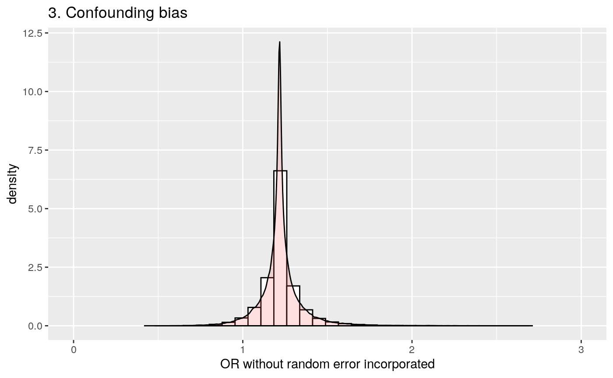
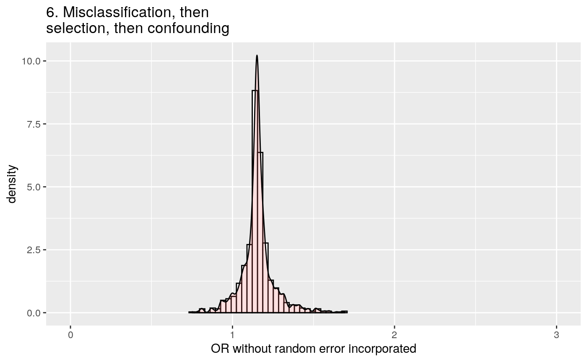
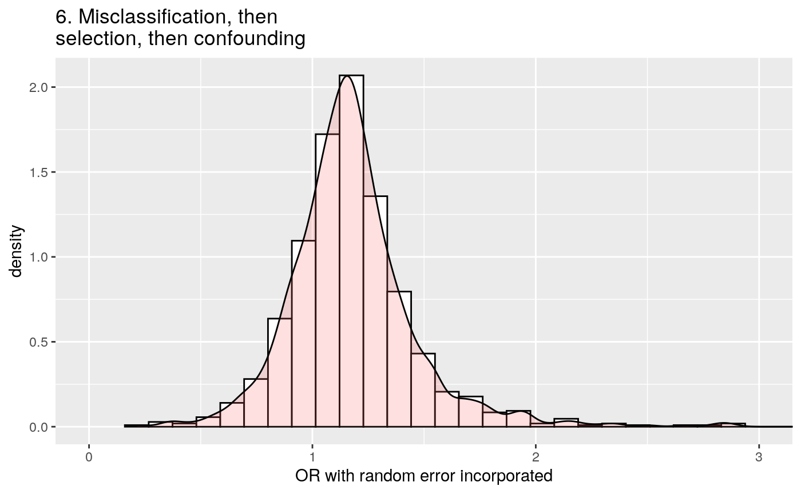

vignettes/episensr.Rmd
episensr.RmdQuantitative bias analysis allows to estimate nonrandom errors in epidemiologic studies, assessing the magnitude and direction of biases, and quantifying their uncertainties. Every study has some random error due to its limited sample size, and is susceptible to systematic errors as well, from selection bias to the presence of (un)known confounders or information bias (measurement error, including misclassification). Bias analysis methods were compiled by Lash et al. in their book “Applying Quantitative Bias Analysis to Epidemiologic Data”. This package implements the various bias analyses from that book, which are also available (for some) as a spreadsheet or a SAS macro, as well as some additional approaches. This vignette provides some examples on how to use the package.
(Note: A Shiny app is available for some functions, at https://dhaine.shinyapps.io/apisensr/., using the R package apisensr which is based on episensr.)
Functions available in episensr are:
selection: Selection biasmbias: Selection bias caused by M biasconfounders: Unmeasured or unknown confoundersconfounders.poly: Polytomous confoundersconfounders.emm: Unmeasured or unknown confounders in the presence of effect modificationconfounders.limit: Bounding the bias limits of unmeasured confoundingconfounders.array: Bias due to unmeasured confounders based on confounding imbalance among exposed and unexposedconfounders.ext: Unmeasured confounders based on external measurementconfounders.evalue: E-value due to unmeasured confoundermisclassification: Disease or exposure misclassificationmisclassification_cov: Covariate misclassificationbootstrap: Bootstrap resampling for selection and misclassification biasmultidimBias: Multidimensional bias analysisprobsens.sel: Probabilistic analysis for selection biasprobsens.conf: Probabilistic analysis for unmeasured confoundingprobsens: Probabilistic analysis for misclassificationprobsens.irr.conf: Probabilistic analysis for unmeasured confounding of person-time dataprobsens.irr: Probabilistic analysis for exposure misclassification of person-time datamultiple bias: Multiple bias modelingWe will use a case-control study by Stang et al. on the relation between mobile phone use and uveal melanoma. The observed odds ratio for the association between regular mobile phone use vs. no mobile phone use with uveal melanoma incidence is 0.71 [95% CI 0.51-0.97]. But there was a substantial difference in participation rates between cases and controls (94% vs 55%, respectively) and so selection bias could have an impact on the association estimate. The 2X2 table for this study is the following:
| Regular use | No use | |
|---|---|---|
| Cases | 136 | 107 |
| Controls | 297 | 165 |
We use the function selection as shown below.
library(episensr)
## Loading required package: ggplot2stang <- selection(matrix(c(136, 107, 297, 165), dimnames = list(c("UM+", "UM-"), c("Mobile+", "Mobile-")), nrow = 2, byrow = TRUE), bias_parms = c(.94, .85, .64, .25)) stang
## --Observed data--
## Outcome: UM+
## Comparing: Mobile+ vs. Mobile-
##
## Mobile+ Mobile-
## UM+ 136 107
## UM- 297 165
##
## 2.5% 97.5%
## Observed Relative Risk: 0.7984287 0.6518303 0.9779975
## Observed Odds Ratio: 0.7061267 0.5143958 0.9693215
## ---
##
## Selection Bias Corrected Relative Risk: 1.483780
## Selection Bias Corrected Odds Ratio: 1.634608The various episensr functions return an object which is a list containing the input and output variables. You can check it out with str().
The 2X2 table is provided as a matrix and selection probabilities given with the argument bias_parms, a vector with the 4 probabilities (guided by the participation rates in cases and controls) in the following order: among cases exposed, among cases unexposed, among noncases exposed, and among noncases unexposed. The output shows the observed 2X2 table and the observed odds ratio (and relative risk), followed by the corrected ones.
Misclassification bias can be assessed with the function misclassification. Confidence intervals for corrected association due to exposure misclassification are also directly available, or the estimates can also be bootstrapped (see below). The confidence intervals from the variance of the corrected odds ratio estimator in the misclassification function are computed as in Greenland et al. and Chu et al.. Using the example in Chu et al. of a case-control study of cigarette smoking and invasive pneumococcal disease, the unadjusted odds ratio is 4.32, with a 95% confidence interval of 2.96 to 6.31. Let’s say the sensitivity of self-reported smoking is 94% and specificity is 97%, for both the case and control groups:
misclassification(matrix(c(126, 92, 71, 224), dimnames = list(c("Case", "Control"), c("Smoking +", "Smoking - ")), nrow = 2, byrow = TRUE), type = "exposure", bias_parms = c(0.94, 0.94, 0.97, 0.97))
## --Observed data--
## Outcome: Case
## Comparing: Smoking + vs. Smoking -
##
## Smoking + Smoking -
## Case 126 92
## Control 71 224
##
## 2.5% 97.5%
## Observed Relative Risk: 2.196866 1.796016 2.687181
## Observed Odds Ratio: 4.320882 2.958402 6.310846
## ---
## 2.5% 97.5%
## Misclassification Bias Corrected Relative Risk: 2.377254
## Misclassification Bias Corrected Odds Ratio: 5.024508 3.282534 7.690912The corrected odds ratio is now 5.02, with a widened 95% confidence interval (3.28 to 7.69). Note the bias despite the large sensitivity and specificity.
You can even reproduce the contour plots in Chu et al. paper!
dat <- expand.grid(Se = seq(0.582, 1, 0.02), Sp = seq(0.762, 1, 0.02)) dat$OR_c <- apply(dat, 1, function(x) misclassification(matrix(c(126, 92, 71, 224), nrow = 2, byrow = TRUE), type = "exposure", bias_parms = c(x[1], x[1], x[2], x[2]))$adj.measures[2, 1]) dat$OR_c <- round(dat$OR_c, 2) library(ggplot2) library(directlabels) p1 <- ggplot(dat, aes(x = Se, y = Sp, z = OR_c)) + geom_contour(aes(colour = ..level..), breaks = c(4.32, 6.96, 8.56, 12.79, 23.41, 432.1)) + annotate("text", x = 1, y = 1, label = "4.32", size = 3) + scale_fill_gradient(limits = range(dat$OR_c), high = 'red', low = 'green') + scale_x_continuous(breaks = seq(0.5, 1, .1), expand = c(0,0)) + scale_y_continuous(breaks = seq(0.5, 1, .1), expand = c(0,0)) + coord_fixed(ylim = c(0.5, 1.025), xlim = c(0.5, 1.025)) + scale_colour_gradient(guide = 'none') + xlab("Sensitivity") + ylab("Specificity") + ggtitle("Estimates of Corrected OR") direct.label(p1, list("far.from.others.borders", "calc.boxes", "enlarge.box", hjust = 1, vjust = -.5, box.color = NA, cex = .6, fill = "transparent", "draw.rects"))
Contour plot of point estimates of corrected odds ratio (OR)
dat$ORc_lci <- apply(dat, 1, function(x) misclassification(matrix(c(126, 92, 71, 224), nrow = 2, byrow = TRUE), type = "exposure", bias_parms = c(x[1], x[1], x[2], x[2]))$adj.measures[2, 2]) dat$ORc_lci <- round(dat$ORc_lci, 2) p3 <- ggplot(dat, aes(x = Se, y = Sp, z = ORc_lci)) + geom_contour(aes(colour = ..level..), breaks = c(4.05, 4.64, 5.68, 7.00, 9.60)) + annotate("text", x = 1, y = 1, label = "2.96", size = 3) + scale_fill_gradient(limits = range(dat$ORc_lci), high = 'red', low = 'green') + scale_x_continuous(breaks = seq(0.5, 1, .1), expand = c(0,0)) + scale_y_continuous(breaks = seq(0.5, 1, .1), expand = c(0,0)) + coord_fixed(ylim = c(0.5, 1.025), xlim = c(0.5, 1.025)) + scale_colour_gradient(guide = 'none') + xlab("Sensitivity") + ylab("Specificity") + ggtitle("95% LCI of Corrected OR") direct.label(p3, list("far.from.others.borders", "calc.boxes", "enlarge.box", hjust = 1, vjust = -.5, box.color = NA, cex = .6, fill = "transparent", "draw.rects"))
Contour plot of 95% lower confidence limit of corrected OR
Covariate misclassification is available via the function misclassification.cov. For example, the paper by Berry et al. looked if misclassification of the confounding variable in vitro fertilization (IVF), a confounder, resulted wrongly on an association between increase folic acid and having twins. IVF increases the risk of twins, and women undergoing IVF might be more likely to take folic acid supplements, i.e. IVF would be a confounder between vitamins and twins. Data on IVF were not available and a proxy for it was used, period of involuntary childlessness. However, it was a poor proxy for IVF, with a sensitivity of 60% and a specificity of 95%. These bias parameters were assumed to be nondifferential. Here’s the code with episensr:
misclassification.cov(array(c(1319, 38054, 5641, 405546, 565, 3583, 781, 21958, 754, 34471, 4860, 383588), dimnames = list(c("Twins+", "Twins-"), c("Folic acid+", "Folic acid-"), c("Total", "IVF+", "IVF-")), dim = c(2, 2, 3)), bias_parms = c(.6, .6, .95, .95))
## --Observed data--
## Outcome: Twins+
## Comparing: Folic acid+ vs. Folic acid-
##
## , , Total
##
## Folic acid+ Folic acid-
## Twins+ 1319 5641
## Twins- 38054 405546
##
## , , IVF+
##
## Folic acid+ Folic acid-
## Twins+ 565 781
## Twins- 3583 21958
##
## , , IVF-
##
## Folic acid+ Folic acid-
## Twins+ 754 4860
## Twins- 34471 383588
##
##
## 2.5% 97.5%
## Observed Relative Risk: 2.441910 2.301898 2.590437
## Observed Odds Ratio: 2.491888 2.344757 2.648251
## ---
## Observed Corrected
## SMR RR adjusted for confounder: 2.261738 1.000235
## RR due to confounding by misclassified confounder: 1.079661 2.441337
## Mantel-Haenszel RR adjusted for confounder: 2.228816 1.000187
## MH RR due to confounding by misclassified confounder: 1.095608 2.441452
## SMR OR adjusted for confounder: 2.337898 1.000304
## OR due to confounding by misclassified confounder: 1.065867 2.491131
## Mantel-Haenszel OR adjusted for confounder: 2.290469 1.000215
## MH OR due to confounding by misclassified confounder: 1.087938 2.491351While the non-adjusted analysis showed that women taking folic acid were 2.44 times more likely to have twins, after correcting for the misclassification of IVF, risk ratio is now null (= 1.0).
We will use data from a cross-sectional study by Tyndall et al. on the association between male circumcision and the risk of acquiring HIV, which might be confounded by religion. The code to account for unmeasured or unknown confounders is the following, where the 2X2 table is given as a matrix. We choose a risk ratio implementation, provide a vector defining the risk ratio associating the confounder with the disease, and the prevalence of the confounder, religion, among the exposed and the unexposed.
tyndall <- confounders(matrix(c(105, 85, 527, 93), dimnames = list(c("HIV+", "HIV-"), c("Circ+", "Circ-")), nrow = 2, byrow = TRUE), type = "RR", bias_parms = c(.63, .8, .05)) tyndall
## --Observed data--
## Outcome: HIV+
## Comparing: Circ+ vs. Circ-
##
## Circ+ Circ-
## HIV+ 105 85
## HIV- 527 93
##
## 2.5% 97.5%
## Crude Relative Risk: 0.3479151 0.2757026 0.4390417
## Relative Risk, Confounder +: 0.4850550
## Relative Risk, Confounder -: 0.4850550
## ---
## Adjusted RR
## Standardized Morbidity Ratio: 0.4850550 0.7172695
## Mantel-Haenszel: 0.4850550 0.7172695The output gives the crude 2X2 table, the crude relative risk and confounder specific measures of association between exposure and outcome, and the relationship adjusted for the unknown confounder, using a standardized morbidity ratio (SMR) or a Mantel-Haenszel (MH) estimate of the risk ratio.
<<<<<<< HEADE-value, introduced by VanderWeele et al., is the minimum strength of association on the risk ratio scale that an unmeasured confounder would need to have with both the exposure and the outcome, conditional on the measured covariates, to fully explain away a specific exposure-outcome association.
For example, a study by Victoria et al. found an association between formula-fed babies compared to breast-fed and respiratory death, RR = 3.9. What would be the strength of association for an unmeasured confounder needed to explain away this association? The E-value express the magnitude of the confounder associations that can produce confounding bias equal to the observed exposure-outcome association. This E-value is:
##
## --E-value--
## Point estimate CI closest to H_0
## RR: 3.900000 1.800000
## E-value: 7.263034 3.000000The E-value is 7.26, i.e. an unmeasured confounder must have a risk ratio of at least 7.26 with both the exposure and the outcome, and above and beyond the measured confounders, to explain away the observed risk ratio of 3.9. A weaker unmeasured confounder could not explain this RR. E-value for the CI closest to the null (i.e. 1) can also be reported.
Similarly, the minimum magnitude of both confounder associations to move away the observed association can be assessed for a non-null hypothesis. For example, the effect of anti-depressant use during pregnancy on infant cardiac defects was 1.06 [0.93–1.22] (Huybrechts et al.). The confidence interval includes 1 so no further unmeasured confounding is needed to shift the confidence interval to include 1, i.e. the E-value = 1. But what would be the strength of a confounder needed to shift RR to 1.2?
##
## --E-value--
## Point estimate CI closest to H_0
## RR: 1.060000 1.220000
## E-value: 1.518753 1.146837We need an unmeasured confounder with a RR of 1.5 each with the outcome, cardiac defect, and the exposure, anti-depressant use, to move the risk ratio to 1.2. A weaker confounder could not shift the observed RR.
E-value can also be computed when the effect measure is:
RR,ORc,HRc,diff_RR and diff_OR.We use a study on the effect of smoking during pregnancy on breast cancer risk by Fink & Lash, where we assume nondifferential misclassification of the exposure, smoking, with probability density functions for sensitivities (Se) and specificities (Sp) among cases and noncases equal to uniform distributions with a minimum of 0.7 and a maximum of 0.95 for sensitivities (0.9 and 0.99 respectively for specificities). We choose to correct for exposure misclassification with the argument type = exposure. We ask for 50000 replications (default is 1000). Don’t be shy with the number of iterations, episensr is fast.
The Se and Sp for cases (seca, spca) are given as a list with its first element referring to the type of distribution (choice between constant, uniform, triangular, trapezoidal, logit-logistic, and logit-normal) and the second element giving the distribution parameters (min and max for uniform distribution). By avoiding to provide information on the noncases (seexp, spexp), we are referring to a nondifferential misclassification.
set.seed(123)
smoke.nd <- probsens(matrix(c(215, 1449, 668, 4296),
dimnames = list(c("BC+", "BC-"), c("Smoke+", "Smoke-")),
nrow = 2, byrow = TRUE),
type = "exposure",
reps = 50000,
seca.parms = list("uniform", c(.7, .95)),
spca.parms = list("uniform", c(.9, .99)))
smoke.nd## --Observed data--
## Outcome: BC+
## Comparing: Smoke+ vs. Smoke-
##
## Smoke+ Smoke-
## BC+ 215 1449
## BC- 668 4296
##
## 2.5% 97.5%
## Observed Relative Risk: 0.9653825 0.8523766 1.0933704
## Observed Odds Ratio: 0.9542406 0.8092461 1.1252141
## ---
## Median 2.5th percentile
## Relative Risk -- systematic error: 0.9431650 0.8817325
## Odds Ratio -- systematic error: 0.9253996 0.8478414
## Relative Risk -- systematic and random error: 0.9359816 0.8175818
## Odds Ratio -- systematic and random error: 0.9162763 0.7664183
## 97.5th percentile
## Relative Risk -- systematic error: 0.9612154
## Odds Ratio -- systematic error: 0.9487841
## Relative Risk -- systematic and random error: 1.0690389
## Odds Ratio -- systematic and random error: 1.0923026The output gives the 2X2 table, the observed measures of association, and the corrected measures of association.
We saved the probsens analysis in a new object smoke.nd. We can see its elements with the function str():
## List of 5
## $ obs.data : num [1:2, 1:2] 215 668 1449 4296
## ..- attr(*, "dimnames")=List of 2
## .. ..$ : chr [1:2] "BC+" "BC-"
## .. ..$ : chr [1:2] "Smoke+" "Smoke-"
## $ obs.measures: num [1:2, 1:3] 0.965 0.954 0.852 0.809 1.093 ...
## ..- attr(*, "dimnames")=List of 2
## .. ..$ : chr [1:2] " Observed Relative Risk:" " Observed Odds Ratio:"
## .. ..$ : chr [1:3] " " "2.5%" "97.5%"
## $ adj.measures: num [1:4, 1:3] 0.943 0.925 0.936 0.916 0.882 ...
## ..- attr(*, "dimnames")=List of 2
## .. ..$ : chr [1:4] " Relative Risk -- systematic error:" " Odds Ratio -- systematic error:" "Relative Risk -- systematic and random error:" " Odds Ratio -- systematic and random error:"
## .. ..$ : chr [1:3] "Median" "2.5th percentile" "97.5th percentile"
## $ sim.df :'data.frame': 50000 obs. of 12 variables:
## ..$ seca : num [1:50000] 0.772 0.897 0.802 0.921 0.935 ...
## ..$ seexp : num [1:50000] 0.772 0.897 0.802 0.921 0.935 ...
## ..$ spca : num [1:50000] 0.919 0.94 0.912 0.943 0.965 ...
## ..$ spexp : num [1:50000] 0.919 0.94 0.912 0.943 0.965 ...
## ..$ A1 : num [1:50000] 117 137 95 139 174 ...
## ..$ B1 : num [1:50000] 1547 1527 1569 1525 1490 ...
## ..$ C1 : num [1:50000] 386 442 321 446 548 ...
## ..$ D1 : num [1:50000] 4578 4522 4643 4518 4416 ...
## ..$ corr.RR: num [1:50000] 0.918 0.94 0.905 0.943 0.954 ...
## ..$ corr.OR: num [1:50000] 0.893 0.922 0.877 0.925 0.94 ...
## ..$ tot.RR : num [1:50000] 0.903 1.067 0.854 1.056 0.999 ...
## ..$ tot.OR : num [1:50000] 0.873 1.09 0.812 1.075 0.999 ...
## $ reps : num 50000
## - attr(*, "class")= chr [1:3] "episensr" "episensr.probsens" "list"smoke.nd is a list of 4 elements where different information on the analysis done are saved. We have smoke.nd$obs.data where we have the observed 2X2 table, smoke.nd$obs.measures (the observed measures of association), smoke.nd$adj.measures (the adjusted measures of association), and smoke.nd$sim.df, a data frame with the simulated variables from each replication, like the Se and Sp, the 4 cells of the adjusted 2X2 table, and the adjusted measures. We can plot the Se prior distribution (and not forgetting to discard the draws that led to negative adjustments).
hist(smoke.nd$sim.df[!is.na(smoke.nd$sim.df$corr.RR), ]$seca,
breaks = seq(0.65, 1, 0.01),
col = "lightgreen",
main = NULL,
xlab = "Sensitivity for Cases")Sensibility prior distribution.
There are combinations of Se, Sp, and disease (or exposure) prevalence that produce negative cells in the corrected 2-by-2 table. For outcome misclassification, this happen when the frequency of observed exposed cases is less than the total number of diseased individuals multiplied by the false-positive proportion. Negative cell counts occur when the false-positive proportion is greater than the proportion of cases that are exposed. When providing values for Se and Sp that are more or less like random classification (i.e. Se ~50% and Sp ~50%), you obtain negative cell values.
Let’s illustrate this function with this example from Modern Epidemiology by Rothman, Greenland & Lash, where the association between occupational resins exposure and lung cancer mortality is studied, together with the presence of an unmeasured potential confounder, smoking (Greenland et al., 1994).
| Resins exposed | Resins unexposed | |
|---|---|---|
| Cases | 45 | 94 |
| Controls | 257 | 945 |
Prior probability distributions are given to each bias parameters. Prevalences of smoking in those exposed to resins, and of smoking in those unexposed to resins receive prior distributions that are uniform between 0.40 and 0.70. Prior distribution for the odds ratio associating smoking with lung cancer mortality is log-normal with 95% limits of 5 and 15. The mean of this distribution is [ln(15) + ln(5)] / 2 = 2.159, and its standard deviation is [ln(15) - ln(5)] / 3.92 = 0.28.
set.seed(123)
probsens.conf(matrix(c(45, 94, 257, 945),
dimnames = list(c("Cases+", "Cases-"), c("Res+", "Res-")),
nrow = 2, byrow = TRUE),
reps = 50000,
prev.exp = list("uniform", c(.4, .7)),
prev.nexp = list("uniform", c(.4, .7)),
risk = list("log-normal", c(2.159, .28)))## --Observed data--
## Outcome: Cases+
## Comparing: Res+ vs. Res-
##
## Res+ Res-
## Cases+ 45 94
## Cases- 257 945
##
## 2.5% 97.5%
## Observed Relative Risk: 1.646999 1.182429 2.294094
## Observed Odds Ratio: 1.760286 1.202457 2.576898
## ---
## Median 2.5th percentile
## RR (SMR) -- systematic error: 1.648388 1.166250
## RR (SMR) -- systematic and random error: 1.645768 1.018201
## OR (SMR) -- systematic error: 1.841387 1.209338
## OR (SMR) -- systematic and random error: 1.841158 1.041488
## 97.5th percentile
## RR (SMR) -- systematic error: 2.325654
## RR (SMR) -- systematic and random error: 2.670214
## OR (SMR) -- systematic error: 2.822182
## OR (SMR) -- systematic and random error: 3.278307The median adjusted OR is 1.84 [1.21,2.81].
=======Additional information are also available, like the 2X2 tables by levels of the confounder.
## Confounder + tyndall$cfder.data
## Circ+ Circ-
## HIV+ 75.17045 2.727967
## HIV- 430.42955 6.172033## Confounder - tyndall$nocfder.data
## Circ+ Circ-
## HIV+ 29.82955 82.27203
## HIV- 96.57045 86.82797Selection and misclassification bias models can be bootstrapped in order to get confidence interval on the adjusted association parameter. We can use the ICU dataset from Hosmer and Lemeshow Applied Logistic Regression textbook as an example. The replicates that give negative cells in the adjusted 2X2 table are silently ignored and the number of effective bootstrap replicates is provided in the output. Ten thousands bootstrap samples are a good number for testing everything runs smoothly. But again, don’t be afraid of running more, like 100,000 bootstrap samples.
library(aplore3) # to get ICU data data(icu) ## First run the model misclass_eval <- misclassification(icu$sta, icu$inf, type = "exposure", bias_parms = c(.75, .85, .9, .95)) misclass_eval
## --Observed data--
## Outcome: Died
## Comparing: Yes vs. No
##
## exposed
## case Yes No
## Died 24 16
## Lived 60 100
##
## 2.5% 97.5%
## Observed Relative Risk: 2.071429 1.175157 3.651272
## Observed Odds Ratio: 2.500000 1.230418 5.079573
## ---
## 2.5% 97.5%
## Misclassification Bias Corrected Relative Risk: 3.627845
## Misclassification Bias Corrected Odds Ratio: 4.871795 1.235506 19.210258## Then bootstrap it set.seed(123) misclass_boot <- boot.bias(misclass_eval, R = 10000) misclass_boot
## 95 % confidence interval of the bias adjusted measures:
## RR: 0.9595117 11.96789
## OR: 1.075386 19.44271
## ---
## Based on 9562 bootstrap replicatesBootstrap replicates can also be plotted, with the confidence interval shown as dotted lines.
plot(misclass_boot, "rr")
Bootstrap replicates and confidence interval.
Epidemiologic studies can suffer from more than one bias. Bias functions in episensr can be applied sequentially to quantify bias resulting from multiple biases.
Following the example in Lash et al., we can use the study by Chien et al.. It is a case-control study looking at the association between antidepressant use and the occurrence of breast cancer. The observed OR was 1.2 [0.9–1.6].
chien <- matrix(c(118, 832, 103, 884),
dimnames = list(c("BC+", "BC-"), c("AD+", "AD-")),
nrow = 2, byrow = TRUE)| AD+ | AD- | |
|---|---|---|
| BC+ | 118 | 832 |
| BC- | 103 | 884 |
Records on medication use differed between participants, from pharmacy records and self-reported use, leading to misclassification:
## --Observed data--
## Outcome: BC+
## Comparing: AD+ vs. AD-
##
## AD+ AD-
## BC+ 118 832
## BC- 103 884
##
## 2.5% 97.5%
## Observed Relative Risk: 1.1012443 0.9646019 1.2572431
## Observed Odds Ratio: 1.2172330 0.9192874 1.6117443
## ---
## 2.5% 97.5%
## Misclassification Bias Corrected Relative Risk: 1.272939
## Misclassification Bias Corrected Odds Ratio: 1.676452 1.150577 2.442679Controls and cases also enrolled into the study at different rates. We can combine the misclassification bias with a selection bias thanks to the function multiple.bias:
chien %>%
misclassification(., type = "exposure", bias_parms = c(.56, .58, .99, .97)) %>%
multiple.bias(., bias_function = "selection", bias_parms = c(.73, .61, .82, .76))##
## Multiple bias analysis
## ---
##
## Selection Bias Corrected Relative Risk: 1.192461
## Selection Bias Corrected Odds Ratio: 1.512206The association between antidepressant use and breast cancer was adjusted for various confounders (race/ethnicity, income, etc.). None of these confounders were found to change the association by more than 10%. However, for illustration, we can add the effect of a potential confounder ( e.g. physical activity):
chien %>%
misclassification(., type = "exposure", bias_parms = c(.56, .58, .99, .97)) %>%
multiple.bias(., bias_function = "selection",
bias_parms = c(.73, .61, .82, .76)) %>%
multiple.bias(., bias_function = "confounders",
type = "OR", bias_parms = c(.92, .3, .44))##
## Multiple bias analysis
## ---
## Adjusted OR
## Standardized Morbidity Ratio: 1.494938 1.011609
## Mantel-Haenszel: 1.494938 1.011609We can do the same in a probabilistic framework:
mod1 <- chien %>%
probsens(., type = "exposure", reps = 100000,
seca.parms = list("trapezoidal", c(.45, .5, .6, .65)),
seexp.parms = list("trapezoidal", c(.4, .48, .58, .63)),
spca.parms = list("trapezoidal", c(.95, .97, .99, 1)),
spexp.parms = list("trapezoidal", c(.96, .98, .99, 1)),
corr.se = .8, corr.sp = .8)
mod1## --Observed data--
## Outcome: BC+
## Comparing: AD+ vs. AD-
##
## AD+ AD-
## BC+ 118 832
## BC- 103 884
##
## 2.5% 97.5%
## Observed Relative Risk: 1.1012443 0.9646019 1.2572431
## Observed Odds Ratio: 1.2172330 0.9192874 1.6117443
## ---
## Median 2.5th percentile
## Relative Risk -- systematic error: 1.0709983 0.9541064
## Odds Ratio -- systematic error: 1.1474450 0.9130899
## Relative Risk -- systematic and random error: 1.0700809 0.8982833
## Odds Ratio -- systematic and random error: 1.1469684 0.7989579
## 97.5th percentile
## Relative Risk -- systematic error: 1.1892552
## Odds Ratio -- systematic error: 1.4339600
## Relative Risk -- systematic and random error: 1.2665725
## Odds Ratio -- systematic and random error: 1.6371782library(ggplot2)
ggplot(mod1$sim.df, aes(x = corr.OR)) +
geom_histogram(aes(y = ..density..), colour = "black", fill = "white") +
geom_density(alpha = .2, fill = "#FF6666") +
labs(title = "1. Misclassification bias", x = "OR without random error incorporated") +
coord_cartesian(xlim = c(0, 3))
mod2 <- chien %>%
probsens.sel(., reps = 100000,
case.exp = list("logit-normal", c(-1.1, 0, 0, 1)),
case.nexp = list("trapezoidal", c(.75, .85, .95, 1)),
ncase.exp = list("logit-normal", c(-1.2, 0, 0, 1)),
ncase.nexp = list("trapezoidal", c(0.7, 0.8, 0.9, 1)))
mod2## --Observed data--
## Outcome: BC+
## Comparing: AD+ vs. AD-
##
## AD+ AD-
## BC+ 118 832
## BC- 103 884
##
## 2.5% 97.5%
## Observed Odds Ratio: 1.2172330 0.9192874 1.6117443
## ---
## Median 2.5th percentile
## Odds Ratio -- systematic error: 1.1762682 0.9718428
## Odds Ratio -- systematic and random error: 1.1762476 0.8352644
## 97.5th percentile
## Odds Ratio -- systematic error: 1.4235736
## Odds Ratio -- systematic and random error: 1.6547397ggplot(mod2$sim.df, aes(x = corr.or)) +
geom_histogram(aes(y = ..density..), colour = "black", fill = "white") +
geom_density(alpha = .2, fill = "#FF6666") +
labs(title = "2. Selection bias", x = "OR without random error incorporated") +
coord_cartesian(xlim = c(0, 3))
mod3 <- chien %>%
probsens.conf(., reps = 100000,
prev.exp = list("logit-normal", c(-0.75, 0.8, 0, 1)),
prev.nexp = list("logit-normal", c(-0.4, 0.8, 0, 1)),
risk = list("trapezoidal", c(.2, .58, 1.01, 1.24)))## Chosen prior Prevalence distributions lead to 2 negative adjusted counts which were discarded.## Warning in log(draws[, 7]): NaNs produced## --Observed data--
## Outcome: BC+
## Comparing: AD+ vs. AD-
##
## AD+ AD-
## BC+ 118 832
## BC- 103 884
##
## 2.5% 97.5%
## Observed Relative Risk: 1.1012443 0.9646019 1.2572431
## Observed Odds Ratio: 1.2172330 0.9192874 1.6117443
## ---
## Median 2.5th percentile
## RR (SMR) -- systematic error: 1.1012533 0.8860939
## RR (SMR) -- systematic and random error: 1.1012224 0.8620908
## OR (SMR) -- systematic error: 1.2190270 0.7198169
## OR (SMR) -- systematic and random error: 1.2253934 0.6940221
## 97.5th percentile
## RR (SMR) -- systematic error: 1.3643095
## RR (SMR) -- systematic and random error: 1.4027257
## OR (SMR) -- systematic error: 2.0542029
## OR (SMR) -- systematic and random error: 2.1683633ggplot(mod3$sim.df, aes(x = OR.SMR.or)) +
geom_histogram(aes(y = ..density..), colour = "black", fill = "white") +
geom_density(alpha = .2, fill = "#FF6666") +
labs(title = "3. Confounding bias", x = "OR without random error incorporated") +
coord_cartesian(xlim = c(0, 3))
chien %>%
probsens(., type = "exposure", reps = 100000,
seca.parms = list("trapezoidal", c(.45, .5, .6, .65)),
seexp.parms = list("trapezoidal", c(.4, .48, .58, .63)),
spca.parms = list("trapezoidal", c(.95, .97, .99, 1)),
spexp.parms = list("trapezoidal", c(.96, .98, .99, 1)),
corr.se = .8, corr.sp = .8) %>%
multiple.bias(., bias_function = "probsens.sel",
case.exp = list("logit-normal", c(-1.1, 0, 0, 1)),
case.nexp = list("trapezoidal", c(.75, .85, .95, 1)),
ncase.exp = list("logit-normal", c(-1.2, 0, 0, 1)),
ncase.nexp = list("trapezoidal", c(0.7, 0.8, 0.9, 1)))##
## Multiple bias analysis
## ---
## Median 2.5th percentile
## Odds Ratio -- systematic error: 1.1210109 0.9240765
## Odds Ratio -- systematic and random error: 1.1202286 0.8447960
## 97.5th percentile
## Odds Ratio -- systematic error: 1.3411515
## Odds Ratio -- systematic and random error: 1.5091203mod6 <- chien %>%
probsens(., type = "exposure", reps = 100000,
seca.parms = list("trapezoidal", c(.45, .5, .6, .65)),
seexp.parms = list("trapezoidal", c(.4, .48, .58, .63)),
spca.parms = list("trapezoidal", c(.95, .97, .99, 1)),
spexp.parms = list("trapezoidal", c(.96, .98, .99, 1)),
corr.se = .8, corr.sp = .8) %>%
multiple.bias(., bias_function = "probsens.sel",
case.exp = list("logit-normal", c(-1.1, 0, 0, 1)),
case.nexp = list("trapezoidal", c(.75, .85, .95, 1)),
ncase.exp = list("logit-normal", c(-1.2, 0, 0, 1)),
ncase.nexp = list("trapezoidal", c(0.7, 0.8, 0.9, 1))) %>%
multiple.bias(., bias_function = "probsens.conf",
prev.exp = list("logit-normal", c(-0.75, 0.8, 0, 1)),
prev.nexp = list("logit-normal", c(-0.4, 0.8, 0, 1)),
risk = list("trapezoidal", c(.2, .58, 1.01, 1.24)))
mod6##
## Multiple bias analysis
## ---
## Median 2.5th percentile
## RR (SMR) -- systematic error: 1.0725491 0.8750890
## RR (SMR) -- systematic and random error: 1.0727636 0.8593872
## OR (SMR) -- systematic error: 1.1525015 0.7094781
## OR (SMR) -- systematic and random error: 1.1575751 0.6883031
## 97.5th percentile
## RR (SMR) -- systematic error: 1.3165332
## RR (SMR) -- systematic and random error: 1.3289895
## OR (SMR) -- systematic error: 1.8635161
## OR (SMR) -- systematic and random error: 1.9119423ggplot(mod6$sim.df, aes(x = OR.SMR.or)) +
geom_histogram(aes(y = ..density..), colour = "black", fill = "white") +
geom_density(alpha = .2, fill = "#FF6666") +
labs(title = "6. Misclassification, then\nselection, then confounding",
x = "OR without random error incorporated") +
coord_cartesian(xlim = c(0, 3))
ggplot(mod6$sim.df, aes(x = tot.ORadj.smr)) +
geom_histogram(aes(y = ..density..), colour = "black", fill = "white") +
geom_density(alpha = .2, fill = "#FF6666") +
labs(title = "6. Misclassification, then\nselection, then confounding",
x = "OR with random error incorporated") +
coord_cartesian(xlim = c(0, 3))